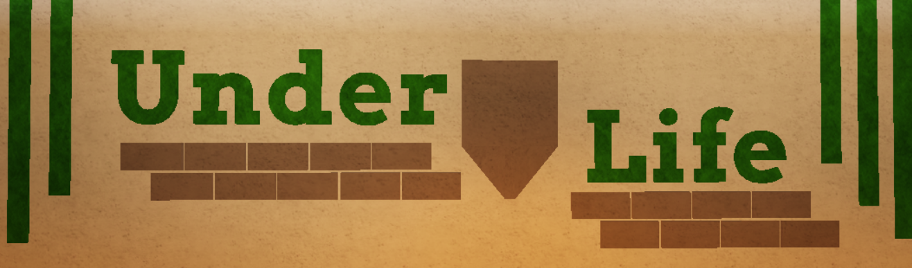
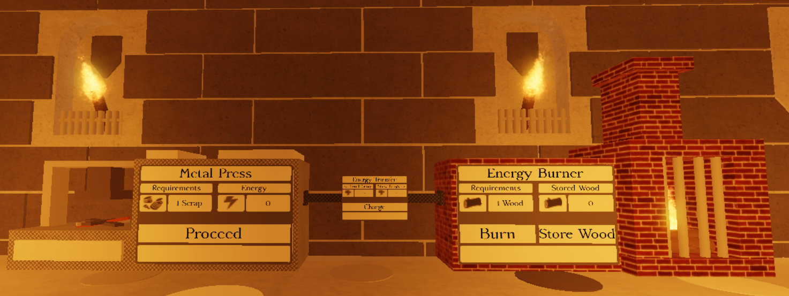

Underlife is an underground RPG game, Underlife is located deep underground in the Victorian sewers. Underlife will contain many different creatures and people who will guide you through your journey in the deep sewers. Underlife will get the players to collect resources to upgrade their tools and armour to defeat bosses and other players. Underlife plans to get players to team up with their friends and defeat bosses to obtain keys which gets them to the next section of the sewers
The aim of Underlife is to get players to band up together and experience a jam packed fun game together from defeating the scary sewer bosses to building a sewer base together UnderLife will give players the rush of adrenaline for hours of fun. UnderLife also aims to allow players to solve puzzles and problems, throughout the UnderLife world there are hidden puzzles and problems for players to solve to give them a boost in the game, from hidden buttons to multi-stage puzzles.
There is no set release date for UnderLife yet as development takes time and we want to ensure the best experience for every player. We hope to release UnderLife late 2021 - Early 2022 with alpha testing happening Late 2021.
Yes! An application to be an alpha tester will be available later. There are no set rules to become an alpha tester but I will be picking a different range of people on different computer operating systems and different computer specs to ensure that Disconnected will work for anyone on any device.
Underlife has an advanced material system which gets players to collect materials around the map to fuel their gameplay. Players must first collect wood from underground trees and the sewer water to fuel their energy burner, this energy burner will fuel everyone of their machines in their sewer home. Next the player must collect scrap from around the map, this scrap can be found in the water and in garbage shoots, this scrap can be turned into metal plates using the metal press. This material system will allow the players to collect materials to fuel their gameplay and upgrade their tools and armour.